Appendix E — KSL Utility Packages
Learning Objectives
To be become familiar with the classes and functionality associated with KSL utilities
To be able to use the KSL file input and output related utilities for CSV, Excel, data frames, and databases
To be able to use the KSL array related utilities
To be able to use the KSL plotting functionality
To be able to use the KSL functionality for performing designed experiments
The purpose of this appendix is to describe the general utilities available within the KSL. The utilities are meant to assist programmers in using Kotlin and especially the use of the simulation constructs available within the KSL. The package ksl.utilities hold a wide variety of classes that support both the programmer and the developer of simulation models. The important items to be discussed in this appendix include:
- The
ksl.utilities.iopackage, which provides support mostly for file input and output some of which, e.g. theMarkDownandStatisticReporterclasses have already been mentioned. - The
KSLArraysandRArraysclasses provide support for working with 1-D and 2-D arrays, including a number of extension functions that are useful for computational work and simulation related activities. - Miscellaneous utilities involving observers, math, and useful interfaces and classes that facilitate working within the KSL
This chapter provides illustrative examples of some of the functionality of the ksl.utilities package. The full source code of the examples can be found in the accompanying KSLExamples project associated with the KSL repository. The files for each example of this chapter can be found here.
We will start by looking at the utilities for input and output.
E.1 The OutputDirectory Class and KSL Object
We often need to get data into a program or to write data out. Because of the plethora of file formats and differing methods for creating and using files, the KSL provides some utilities for working with comma separated value (CSV), Excel, Markdown, text, and database files. The most relevant classes include OutputDirectory class, the KSL object and the KSLFileUtil class. Figure E.1 illustrates the functions and properties of the KSL object and the OutputDirectory class.
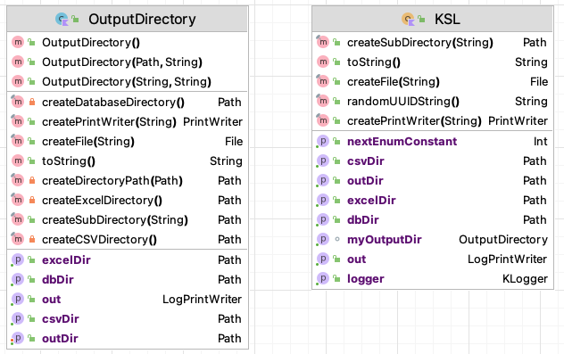
The OutputDirectory class is an abstraction for a file directory to store output. When working with a particular simulation model, it is useful to store all of the results and files generated by the model in one directory. The OutputDirectory class facilitates this common use case. An instance of OutputDirectory requires a path to the file directory and then forms some standard sub-directories (excelDir, dbDir, csvDir, outDir) to hold various files that may be generated for these common types of files. The KSL object is, in essence, a default directory to hold all KSL output. Notice that OutputDirectory provides functions for creating files and directories within it. The most useful of the functions is the createPrintWriter(name: String) function which takes in the name of the file and creates a PrintWriter set up to write to the file. Also, notice the createSubDirectory() function. The directories created by this function are relative to the defined output directory. This alleviates the burden of fully specifying path strings and working with paths.
Here is some sample code that uses the OutputDirectory class.
// get the working directory
val path = Paths.get("").toAbsolutePath()
println("Working Directory = $path")
// creates a directory called TestOutputDir in the current working directory
// Creates subdirectories: csvDir, dbDir, excelDir and file out.txt
val outDir = OutputDirectory(path.resolve("TestOutputDir"))
// write to the default file
outDir.out.println("Use out property to write out text to a file.")
// Creates a PrintWriter (and file) to write to within TestOutputDir
val pw = outDir.createPrintWriter("PW_File.txt")
pw.println("Hello, World")
val subDir = outDir.createSubDirectory("SubDir")
println(outDir)The KSL object is essentially a predefined instance of OutputDirectory that creates a default directory called kslOutput within the current working directory. The property out is an instance of a LogPrintWriter, which is a class that wraps a PrintWriter but also has a property called OUTPUT_ON, which has type boolean, where true indicates that output will be written and false turns off the output. You can use this to stop excessive print messages globally. I find this useful for simple debugging messages. Besides this field, KSL has a standard logger for logging program messages.
// use KSL like you use OutputDirectory but with some added functionality
// The PW_File.txt file with be within the kslOutput directory within the working directory
val pw = KSL.createPrintWriter("PW_File.txt")
pw.println("Hello, World!")
// Creates subdirectory SubDir within the kslOutput directory
KSL.createSubDirectory("SubDir")
// use KSL.out to write to kslOutput.txt
KSL.out.println("Information written into kslOutput.txt")
println(KSL)
// KSL also has logger. This logs to logs/ksl.log
KSL.logger.info { "This is an informational log comment!" }E.2 Logging Options
Logging is controlled by a logback XML file for configuring the loggers. The logback.xml file can be found in the resources folder within the source code repository. The more interesting classes that have default loggers written to the logs directory include:
KSLuseful for general purpose logging and written toksl.logwith default level DEBUG.DatabaseIfccaptures database interaction, written tokslDbLog.logwith default level INFO.ExcelUtilcaptures Excel file interactions, written tokslExcelLog.logwith default level INFO.KSLFileUtilcaptures file interactions, written toksl_io.logwith default level INFO.Modelcaptures key model actions as the model is processed, written tokslSim.logwith default level of INFO.ModelElementcaptures detailed actions related to model element processing, written tokslModelElement.logwith default level INFO.ProcessModelcaptures detailed actions related to entity processing, written tokslEntity.logwith default level INFO. Very detailed entity tracing can be achieved by setting the log level to TRACE.RNStreamProvidercaptures random number stream assignments, written tokslStreams.logwith default level INFO.Controlscaptures simulation control assignment, written tocontrolsFile.logwith default level INFO.
For diagnosing issues related to these classes, you can change the debug level within the logback.xml file. Be careful with setting the ProcessModel logger to trace because the generated files will be large and the execution time of the model will be longer because of the extra IO.
E.3 The KSLFileUtil Object
The KSLFileUtil Object supports the creation/deletion of files, directories, and working with file extensions. It also facilitates the reading and writing of 1-D and 2-D arrays. Figure E.2 illustrates the functions and properties of the KSLFileUtil object
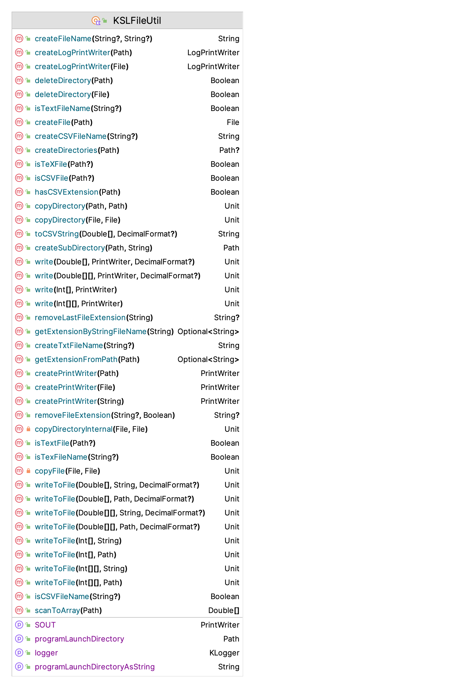
copyDirectory()andcopyFile()facilitate path and file based copyingcreateFile(),createDirectories(),createPrintWriter(), all create according to their function namesdeleteDirectory()will delete a directory based on aFileor aPathcreateCSVFileName(),createTxtFileName()will make a string that has the appropriate extensionisCSVFile(),isTeXFile(),isTextFile()check for the appropriate extension
As previously noted, there is a logger available for logging file interactions. A useful property is the programLaunchDirectory, which provides the path to the directory in which the program is executing.
The KSLFileUtil object also helps with array IO.
write(array, out: PrintWriter)has versions for working with arrays of primitives:Array<DoubleArray>,Array<IntArray>,DoubleArray,IntArray. The functions that write double values also have an optional argument to control formatting,df: DecimalFormat?. There are equivalent extension functions forArray<DoubleArray>,Array<IntArray>,DoubleArray,IntArrayfor writing to files.scanToArray(path: Path)will read the values file associated with the path into anDoubleArray.toCSVString(array: DoubleArray, df: DecimalFormat?)will format a line representing the array of data as a comma separated value string.
These functions are used in a number of other packages when working with data and files.
E.4 CSV, Excel, and Tabular Data Files
The KSL also has simple utilities to work with comma separated value (CSV) files and Excel files. The underlying CSV file processing library used by the KSL is Commons CSV. The KSL provision of working with CSV files is not meant to replace the functionality of those libraries. Instead, the purpose is to provide a simple facade so that users can do some simple processing without worrying about the complexities of a full featured CSV library. Figure E.3 illustrates the functions and properties of the CSVUtil object
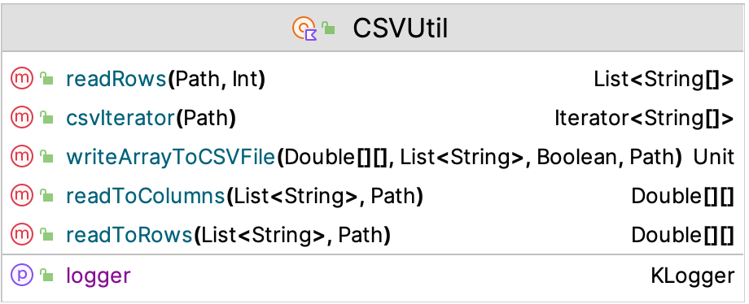
Assuming that the CSV data is organized with first row as a header and each subsequent row as the data for each column as follows:
"x", "y"
1.1, 2.0
4.3, 6.4The KSL class CSVUtil has the following functions:
readRows() : List<Array<String>>Reads all rows into list holding the rows within an array of stringsreadRows() : Array<DoubleArray>Reads all rows into array holding the rows within an array of doublesreadToColumns() : Array<DoubleArray>reads all of the rows and transposes them into the columnswriteArrayToCSVFile(array: Array<DoubleArray>)will write a 2-D array to a file with the CSV format, allowing an optional header and whether quotes are added to strings.csvIterator(): Iterator<Array<String>>will iterate through a CSV file.
The following code illustrates the use of the CSVUtil class. An instance of a NormalRV random variable is used to make a 5 row, 4 column matrix of normal \(\mu = 0\) and \(\sigma = 1\) random variates.
val n = NormalRV()
val matrix = n.sampleAsColumns(sampleSize = 5, nCols = 4)
for(i in matrix.indices){
println(matrix[i].contentToString())
}
val h = listOf("col1", "col2", "col3", "col4")
val p = KSL.csvDir.resolve("data.csv")
CSVUtil.writeArrayToCSVFile(matrix, header = h.toMutableList(), pathToFile = p)
println()
val dataAsList: List<Array<String>> = CSVUtil.readRowsToListOfStringArrays(p, skipLines = 1)
val m = KSLArrays.parseTo2DArray(dataAsList)
for(i in matrix.indices){
println(m[i].joinToString(prefix = "[", postfix = "]"))
}The contents of the matrix are printed to console. The header is made for the CSV file and then the matrix is written to the file using the CSVUtil function to write an array to a CSV file. Then, the CSVUtil object is used to read the data into list of strings, which are parsed to double values. You can use the Commons CSV functionality to read and write values via its API. The approach illustrated here is only meant for simple file processing.
Excel file operations are available within the KSL through the Apache POI library. The KSL provision of working with Excel files is not meant to replace the functionality of the POI library. Instead, the purpose is to provide a simple facade so that users can do some simple processing without worrying about the complexities of a full featured POI library. Figure E.4 illustrates the functions and properties of the ExcelUtil object.
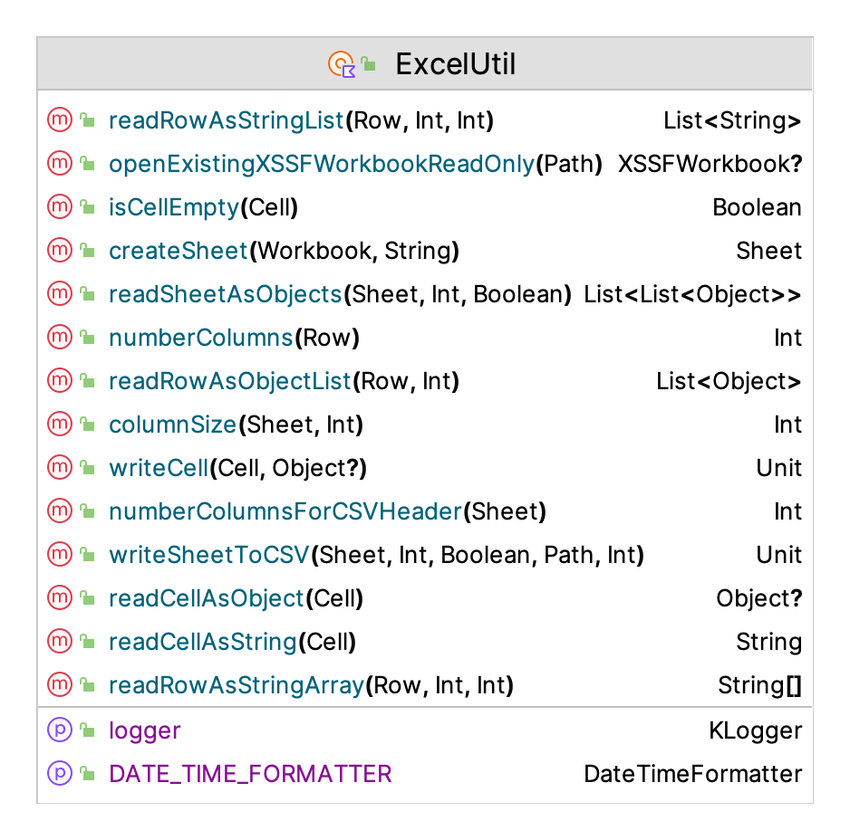
The KSL class ExcelUtil provides the basic functions primarily concerned with reading and writing tabular data:
createSheet(workbook: Workbook, sheetName:String)Creates a sheet within the workbook with the name.writeSheetToCSV()Treats the columns as fields in a csv file, writes each row as a separate csv row in the resulting csv filewriteCell()Writes the object to the Excel cellreadCellAsObject() : Any?the data in the form of an objectreadCellAsString() : Stringthe data in the form of a StringreadRowAsObjectList() : List<Any?>an list of strings representing the contents of the cellsreadRowAsStringArray() : Array<String?>an array of strings representing the contents of the cellsreadRowAsStringList() : List<String?>a list of strings representing the contents of the cellsreadSheetAsObjects() : List<List<Any?>>a list of lists of the objects representing each cell of each row of the sheetcolumnSize()number of rows that have data in a particular column as defined by not having a null cell.
To use the ExcelUtil object, it is useful to know how the Apache POI library works because you need to know how to create workbooks. The functionality of the POI library is also exposed as part of the KSL API. The main use of the object ExcelUtil within the KSL is for importing and exporting database tables and record sets to Excel.
Comma separated value (CSV) files and Excel files are commonly used to store data in a tabular (row/column) format. The KSL also provides some basic functionality for reading and writing tabular files.
A common programming necessity is to write or read data that is organized in rows and columns. While libraries that support CSV file processing are readily available, it is sometimes useful to have a quick and easy way to write (or read) tabular data that is not as sophisticated as a database. While Excel files also provide this ability, using the Apache POI may be more than is required. To make this type of file processing easier, the KSL provides a general interface for representing tabular data as a data class via the TabularData class. In addition, the TabularFile, TabularOutputFile, and TabularInputFile classes permit simple row oriented reading and writing of tabular data.
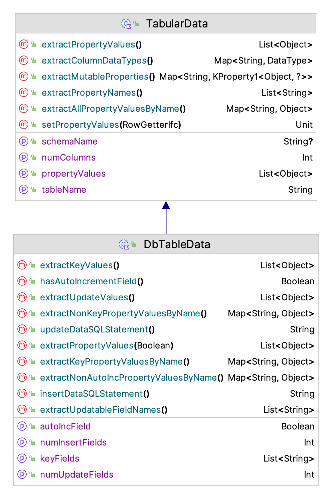
Figure E.5 illustrates the functions and properties of the TabularData class. The basic usage of this class is to subclass a data class from it to define the contents of a row of data. This can be used for database processing as well as for working with the tabular file classes.
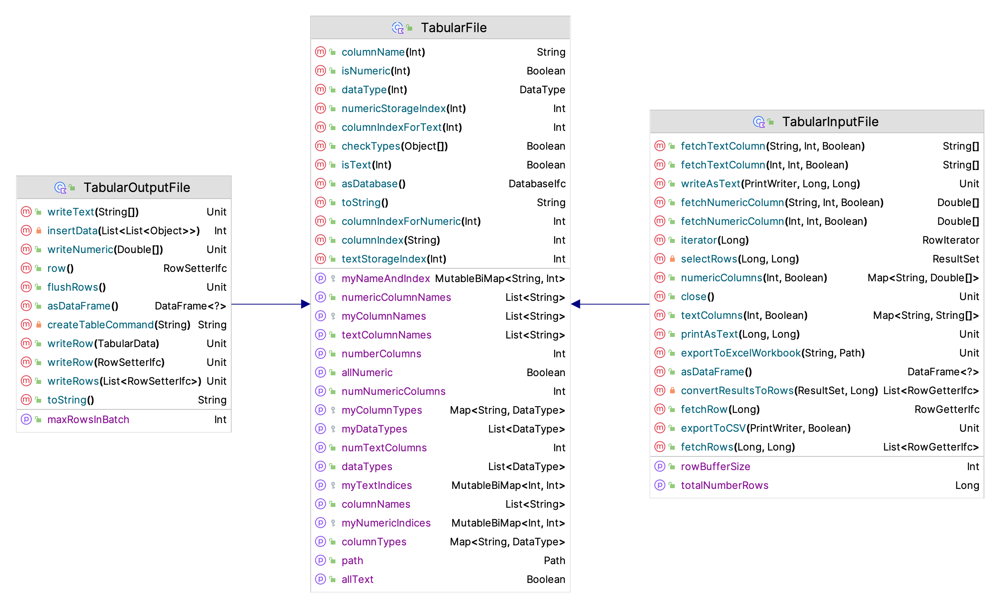
Figure E.6 illustrates the functions and properties of the classes for working with tabular data stored in files.
The following code illustrates how to make a tabular file with 5 columns. The first three columns hold numeric data. The fourth column holds text, and the fifth column holds numeric data. The enum DataType defines two types of data to be held in columns: numeric or text. This covers a vast majority of simple computing needs.
val path: Path = KSL.outDir.resolve("demoFile")
// configure the columns
val columns: MutableMap<String, DataType> = TabularFile.columns(3, DataType.NUMERIC).toMutableMap()
columns["c4"] = DataType.TEXT
columns["c5"] = DataType.NUMERIC
// make the file
val tif = TabularOutputFile(columns, path)
println(tif)The columns() function is used to define the columns as a map of column names and the data types. This describes a type of column within the tabular file.
The numeric type should be used for numeric data (float, double, long, int, etc.). In addition, use the numeric type for boolean values, which are stored 1.0 = true, 0.0 = false). The text type should be used for strings and date/time data. Date and time data is saved as ISO8601 strings (“YYYY-MM-DD HH:MM:SS.SSS”). If you need more type complexity, you should use a database or some other more advanced serialization method such as JSON, Parquet, or Arrow.
The following code creates some random data and writes rows of data to the file. The RowSetterIfc interface is use in that it allows for the writing of any numeric columns and any text columns as separate row operations.
// needed for some random data
val n = NormalRV(10.0, 1.0)
val k = 15
// get a row
val row: RowSetterIfc = tif.row()
// write some data to each row
println("Writing rows...")
for (i in 1..k) {
// reuse the same row, many times
// can fill all numeric columns
row.setNumeric(n.sample(5))
// can set specific columns
row.setText(3, "text data $i")
// need to write the row to the buffer
tif.writeRow(row)
}
// don't forget to flush the buffer
tif.flushRows()
println("Done writing rows!")The tabular file package also allows for the defintion of the data schema via data class. The type of the properties of the data class are translated to either text or numeric columns. The following code illustrates this functionality. Here a data class is used to define a text field and a numeric field, which are then written to the file.
val path: Path = KSL.outDir.resolve("TabularDataFile")
data class SomeData(var someText: String = "", var someData: Double = 0.0): TabularData("SomeData")
val rowData = SomeData()
// use the data class instance to define the columns and their types
val tof = TabularOutputFile(rowData, path)
println(tof)
// needed for some random data
val n = NormalRV(10.0, 1.0)
val k = 15
// write some data to each row
println("Writing rows...")
for (i in 1..k) {
// reuse the same row, many times
// can fill all numeric columns
rowData.someData = n.value
rowData.someText = "text data $i"
// need to write the row to the buffer
tof.writeRow(rowData)
}
// don't forget to flush the buffer
tof.flushRows()
println("Done writing rows!")As long as the data class is compatible with the rows of the file, then the same approach can be used to read in the data as illustrated in the next code snippet.
val tif = TabularInputFile(path)
println(tif)
// TabularInputFile is Iterable and foreach construct works across rows
println("Printing all rows from an iterator using data class")
for (row in tif.iterator()) {
rowData.setPropertyValues(row)
println(rowData)
}
println()Reading data from the file has a bit more functionality through some useful iterators. The following code opens a tabular file and iterates the rows.
val path: Path = KSL.outDir.resolve("demoFile")
val tif = TabularInputFile(path)
println(tif)
// TabularInputFile is Iterable and foreach construct works across rows
println("Printing all rows from an iterator")
for (row in tif.iterator()) {
println(row)
}
println()You can fetch specific rows or a subset of rows. Multiple iterators can be active at the same time.
// You can fetch rows as a list
println("Printing a subset of rows")
val rows: List<RowGetterIfc> = tif.fetchRows(1, 5)
for (row in rows) {
println(row)
}
println()You can start the iterator at a particular row.
println("Print starting at row 9")
val iterator: TabularInputFile.RowIterator = tif.iterator(9)
while (iterator.hasNext()) {
println(iterator.next())
}
println()You can grab various columns as arrays.
println("Printing column 0")
val numericColumn: DoubleArray = tif.fetchNumericColumn(0, 10, true)
for (v in numericColumn) {
println(v)
}You can write the data to an Excel workbook.
try {
tif.exportToExcelWorkbook("demoData.xlsx", KSL.excelDir)
} catch (e: IOException) {
e.printStackTrace()
}You can pretty print rows of the data and export the data to a CSV file.
tif.printAsText(1, 5)
val printWriter: PrintWriter = KSL.createPrintWriter("data.csv")
tif.exportToCSV(printWriter, true)
printWriter.close()You can even convert the tabular data to an SQLLite database or turn the data into a data frame.
try {
val database: DatabaseIfc = tif.asDatabase()
} catch (e: IOException) {
e.printStackTrace()
}
println()
println("Printing a data frame version")
val df = tif.asDataFrame()
println(df)Much of this functionality is used within the implementation of the KSL database implementation, which will be discussed in a subsequent section. Since we just mentioned data frames, we discuss that functionality in the next section.
E.5 The DataFrameUtil Object
A data frame is an in-memory data structure that holds tabular data. That is, data having rows and columns. Kotlin has a library to support this type of functionality and the DataFrameUtil object has been designed to facilitate the use of data frame within the KSL. Documentation, examples, and the basic functionality of Kotlin data frames can be found at this repository. Kotlin data frames provide similar functionality as that found in other data frame libraries such as R. Figure E.7 illustrates the functions and properties of the DataFrameUtil object.
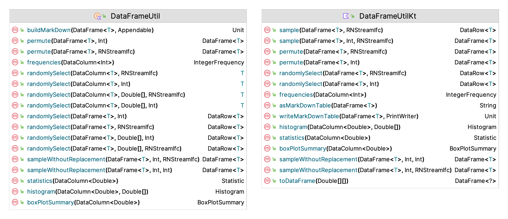
The main functionality added by DataFrameUtil is sampling from rows and columns of the data frame and computing some basic statistics. The functions for sampling without replacement return a new data frame with the sampled rows. The functions for permutation return a new data frame with the permuted rows. The functions for randomly selection will select an element from the a column of the data frame or for selecting an entire row. The element or row can be selected with equal probability or via an empirical distribution over the elements (by row). KSL statistics, histogram, box plot statistics, and frequencies can all be computed over the columns.
- sampleWithoutReplacement(DataFrame\(<T>\), Int, RNStreamIfc) DataFrame\(<T>\)
- sampleWithoutReplacement(DataFrame\(<T>\) Int, Int) DataFrame\(<T>\)
- permute(DataFrame\(<T>\), Int) DataFrame\(<T>\)
- permute(DataFrame\(<T>\), RNStreamIfc) DataFrame\(<T>\)
- randomlySelect(DataColumn\(<T>\), RNStreamIfc) T
- randomlySelect(DataColumn\(<T>\), Int) T
- randomlySelect(DataColumn\(<T>\), Double[], RNStreamIfc) T
- randomlySelect(DataColumn\(<T>\), Double[], Int) T
- randomlySelect(DataFrame\(<T>\), Int) DataRow\(<T>\)
- randomlySelect(DataFrame\(<T>\), RNStreamIfc) DataRow\(<T>\)
- randomlySelect(DataFrame\(<T>\), Double[], Int) DataRow\(<T>\)
- randomlySelect(DataFrame\(<T>\), Double[], RNStreamIfc) DataRow\(<T>\)
- buildMarkDown(DataFrame\(<T>\), Appendable) Unit
- histogram(DataColumn\(<Double>\), Double[]) Histogram
- statistics(DataColumn\(<Double>\)) Statistic
- frequencies(DataColumn\(<Int>\)) IntegerFrequency
- boxPlotSummary(DataColumn\(<Double>\)) BoxPlotSummary
Extension functions are also available for a data frame and its columns. The Kotlin data frame library has been included in the KSL as part of the API. Thus, clients also have access to the full features associated with the library. The main usage within the KSL is in the capturing of simulation output data. The easiest way to do this is by using the KSLDatabase class. Data frame instances can be requested as part of the database functionality of the KSL.
E.6 KSL Database Utilities
Some of the database functionality for use when accessing simulation results has already been discussed in Chapter 5. This section presents some of the more general database utilities available within the KSL framework. These utilities basically exist to help with implementing the KSL database functionality. However, users may find some of this functionality useful for other purpose. However, these utilities are not meant as a substitute for more advanced database frameworks such as JOOQ, Exposed, and KTorm. We refer the interested reader to those libraries for more advanced work for database processing using Kotlin.
Figure E.8 illustrates the properties of the interfaces, DatabaseIOIfc and DatabaseIfc which represent the main functionality for working with databases.
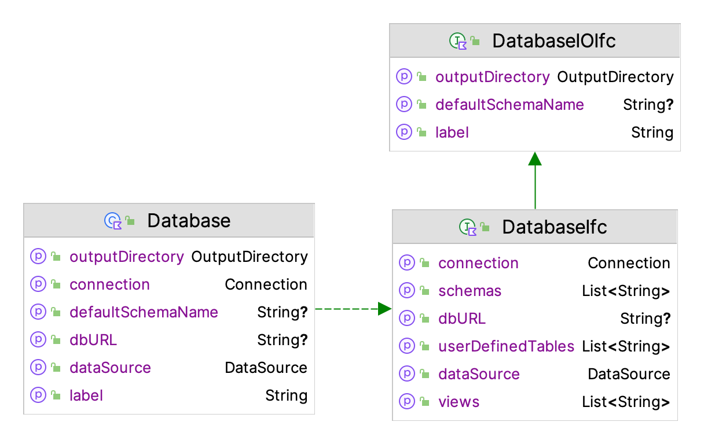
The DatabaseIOIfc interface is responsible for defining the functionality related to input and output. As shown in Figure E.9 the capabilities are easily discerned from the names of the methods. Exporting tables and views to Excel or CSV files are probably the most useful functions. For small tables, capturing the table as a Markdown table can be useful.
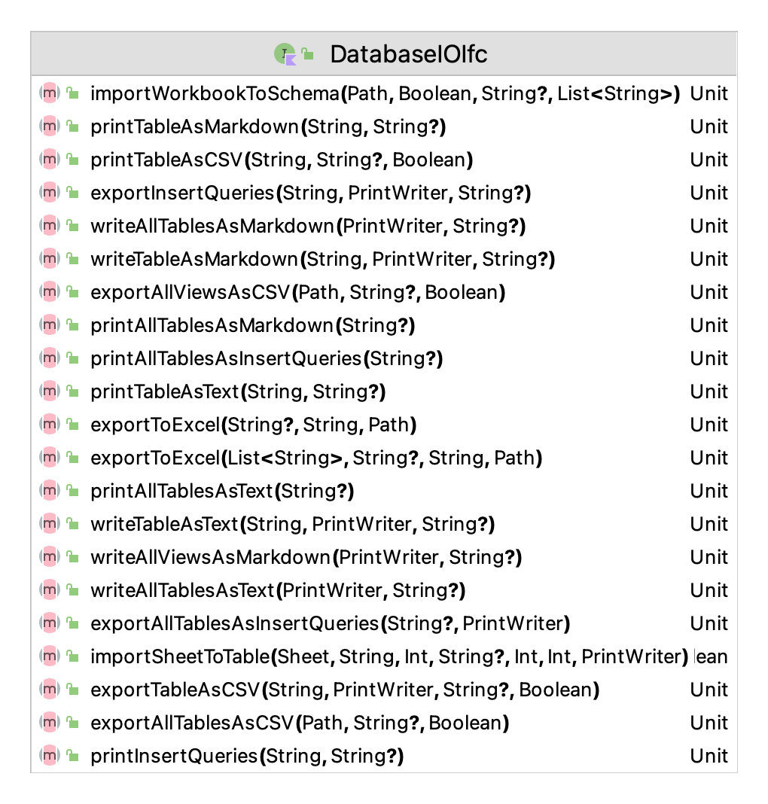
The DatabaseIfc interface defines what a database can do and the Database class provides a concrete implementation for working with a database. The functionality of the DatabaseIfc interface is extensive. Besides the IO related functions, we note a few useful methods here. The execute methods allow the execution of an SQL string, list of SQL commands, or script file. It is the user’s responsibility for forming an appropriate SQL string.
- executeCommand(String) Boolean
- executeCommand(String) Boolean
- executeCommands(List\(<\)String\(>\)) Boolean
- executeCommands(List\(<\)String\(>\)) Boolean
- executeScript(Path) Boolean
- executeScript(Path) Boolean
There are methods for checking if the database contains specific named tables or views.
- containsSchema(String) Boolean
- containsSchema(String) Boolean
- containsTable(String) Boolean
- containsTable(String, String) Boolean
- containsTable(String, String) Boolean
- containsTable(String) Boolean
- containsView(String) Boolean
- containsView(String) Boolean
A set of methods for fetching data from the database facilitate the execution of SQL select statements. The select all methods will select all the data from a named table or view.
- fetchCachedRowSet(String) CachedRowSet?
- fetchCachedRowSet(String) CachedRowSet?
- fetchOpenResultSet(String) ResultSet?
- fetchOpenResultSet(String) ResultSet?
- selectAll(String, String?) CachedRowSet?
- selectAll(String, String?) CachedRowSet?
- selectAllIntoOpenResultSet(String, String?) ResultSet?
- selectAllIntoOpenResultSet(String, String?) ResultSet?
The interface also provides some basic methods for inserting and updating data within the database by using Kotlin data classes, specifically sub-classes of the DbTableData class, which extends the TabularData class and allows the user to supply the data for a table in a data class instance similar to how it was done for working with tabular files. However, in this case more general mapping of data types to database types is permitted besides just numeric or text.
- insertDbDataIntoTable(List\(<\)String\(>\), String, String?) Int
- insertDbDataIntoTable(T, String, String?) Int
- insertDbDataIntoTable(List\(<\)String\(>\), String, String?) Int
- insertDbDataIntoTable(T, String, String?) Int
- updateDbDataInTable(List\(<\)String\(>\), String, String?) Int
- updateDbDataInTable(T, String, String?) Int
- updateDbDataInTable(List\(<\)String\(>\), String, String?) Int
- updateDbDataInTable(T, String, String?) Int
When working with the database it is useful to get a connection, access table meta data, check if tables have data, check if tables or views exist.
- getConnection() Connection
- getSchemas() List\(<\)String\(>\)
- getUserDefinedTables() List~\(<\)String\(>\)
- getViews() List\(<\)String\(>\)
- hasData(String?) Boolean
- hasData(String?) Boolean
- hasTables(String) Boolean
- hasTables(String) Boolean
- isTableEmpty(String, String?) Boolean
- isTableEmpty(String, String?) Boolean
- numRows(String, String?) Long
- numRows(String, String?) Long
- tableMetaData(String, String?) List\(<\)ColumnMetaData\(>\)
- tableMetaData(String, String?) List\(<\)ColumnMetaData\(>\)
- tableNames(String) List\(<\)String\(>\)
- tableNames(String) List\(<\)String\(>\)
- viewNames(String) List\(<\)String\(>\)
- viewNames(String) List\(<\)String\(>\)
We refer the interested reader to the KSL KDoc documentation for further details about using these methods.
The DatabaseIfc functionality defines basic capabilities for working with any database implementation. The KSL provides functionality to create SQLite, Derby , and DuckDb embedded databases. In addition, the KSL facilitates the creation of a database on a Postgres database server.
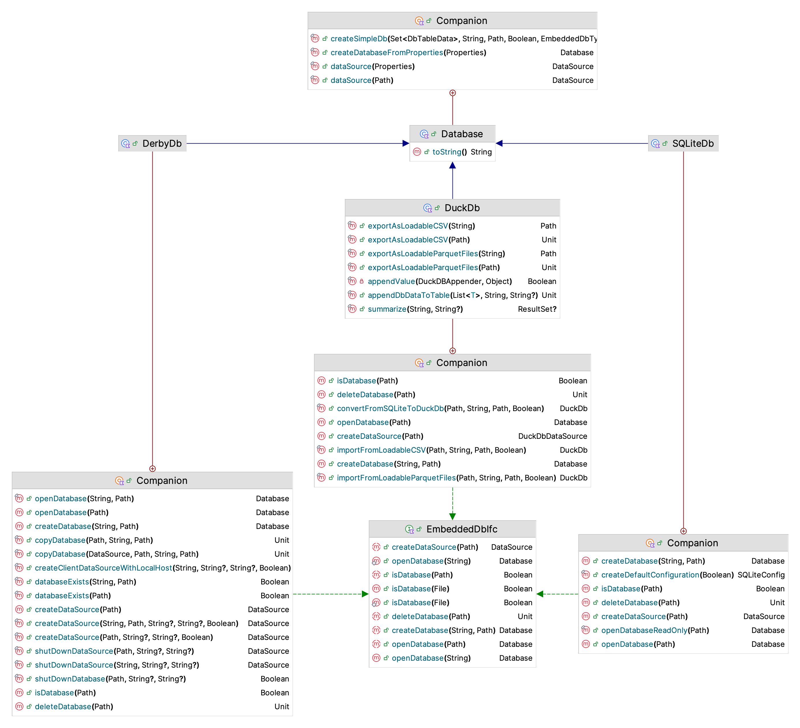
Figure E.10 illustrates the functionality of the EmbeddedDbIfc interface, and its SQLite, Derby, and DuckDb implementations. Readers interested in other databases can review these implementations for how to structure code for other databases. The PostgresDb class provides similar functionality. The main purpose is to be able to supply a data source to the Database class.
Figure E.11 provides the functionality for the KSLDatabase class. Although most of this functionality has been mentioned within Chapter 5, it is useful to note that since the KSLDatabase class is a database, it also has all of the previously mentioned database functionality.
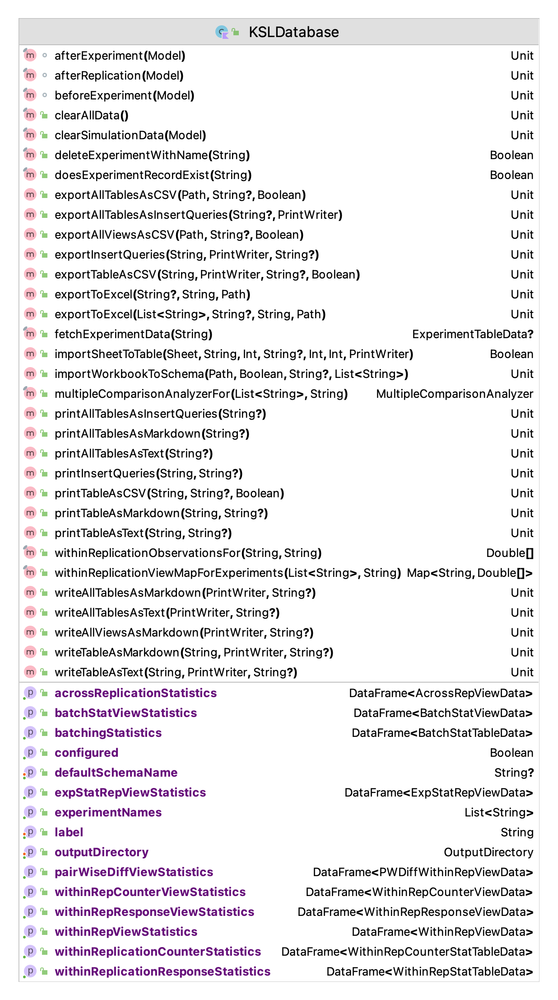
The main notable methods involve the export, printing, or writing of the underlying data from the tables or views storing the simulation statistical results. In addition, there are a number of properties that will provide data frame representations of the simulation output data. For example, the data class WithinRepStatTableData represents the statistics collected within each replication and is used to by the withinReplicationResponseStatistics property to create a data frame that holds the statistical data. Figure E.12 provides the data elements held for within replication data.
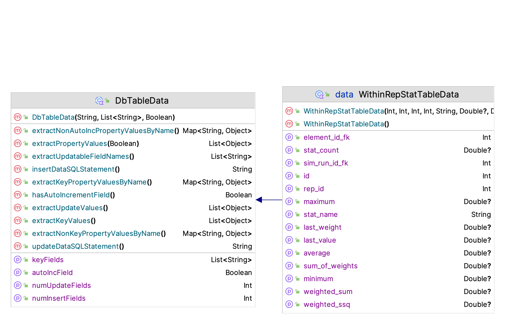
The within replication statistical data represents the summary statistics of the data collected during a replication. The most relevant properties are the average, minimum, and maximum. To compute across replication statistics we can use the average for each replication. The statistical quantities are captured within the underlying database as discussed in Chapter 5. The user can post-process any of this data using commonly available database technology and SQL.
The database utilities also offers the ability to quickly create simple databases via the Database companion object’s createSimpleDb() function. The purpose of this function is to allow the creation of a quick and dirty database solution based on the DbTableData data classes. By defining data classes that are sub-classes of DbTableData, a CREATE TABLE specification can be obtained and the database created. Then, the database can be used to insert data from instances of the DbTableData sub-classes. The following code illustrates this possibility.
First, we define two data classes that extend the DbTableData class. In this code, we define a Person and a City class, each with a property id that will act as the primary key of the table. The primary key must be specified; however, the use of an auto-generated (surrogate) key is not supported at this time.
data class Person(
var id: Int,
var name: String,
var age: Int
) : DbTableData("Persons", listOf("id"))
data class City(
var id: Int,
var name: String,
var population: Int
) : DbTableData("Cities", listOf("id"))Then, by providing a simple instance of these classes to the SimpleDb class constructor, we will cause a database to be created that is setup to hold the data from the supplied data classes. If you want to see the CREATE TABLE statements used to define the tables, then uncomment the two print statements in the following code.
val p = Person(1, "manuel", age = 10)
// println(p.createTableSQLStatement())
val c = City(1, "London", population = 1000)
// println(c.createTableSQLStatement())
val db = Database.createSimpleDb(setOf(p, c), "TestSimpleDb")
db.insertDbDataIntoTable(p)
db.insertDbDataIntoTable(c)You can then used the full functionality provided by the KSL database utilities because the createSimpleDb() function returns an instance of the DatabaseIfc and DatabaseIOIfc interfaces. This functionality is useful for setting up small databases to hold generated data. It does not facilitate more advanced data definition or object-relational mappings. Please see more advanced database frameworks such as JOOQ, Exposed, and KTorm for more robust solutions.
E.7 Array Utilities
The KSL provides a wide-variety of functions and extensions for working with Double, Int, and Long arrays. Most of the functionality is focused on working with one-dimensional Double arrays. Figure E.13 illustrates the many methods for working with arrays via the KSLArrays object. These methods are also available as extension functions.
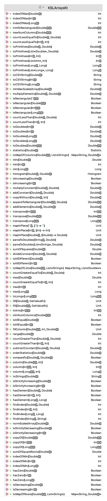
There are a number of functions that facilitate conversions: to primitive types, to strings, conversion between types, and parsing.
- toPrimitives(Double[], Double) Double[]
- toPrimitives(List\(<\)Double\(>\), Double) Double[]
- toPrimitives(Int[], Int) Int[]
- toPrimitives(List\(<\)Int\(>\), Int) Int[]
- toPrimitives(Long[], Long) Long[]
- toPrimitives(List\(<\)Long\(>\), Long) Long[]
- toCSVString(Double[]) String
- toCSVString(Int[]) String
- toCSVString(Long[]) String
- toDoubles(Int[]) Double[]
- toDoubles(Int[]) Double[]
- toDoubles(Long[]) Double[]
- toDoubles(Long[]) Double[]
- toDoubles(Double[][]) Double[][]
- parseToDoubles(String[], Double) Double[]
- parseToDoubles(List\(<\)String\(>\), Double) Double[]
- toStrings(Double[]) String[]
- toInts(Int[][]) Int[][]
- toLongs(Long[][]) Long[][]
Then, there are useful functions for performing basic statistical computations such as finding the indices of the minimum or maximum, counting elements, finding the minimum, finding the maximum, and computing statistics.
- indexOfMax(Double[]) Int
- indexOfMax(Int[]) Int
- indexOfMax(Long[]) Int
- indexOfMin(Double[]) Int
- indexOfMin(Int[]) Int
- indexOfMin(Long[]) Int
- countLessEqualTo(Double[], Double) Int
- countLessEqualTo(Int[], Int) Int
- countLessThan(Double[], Double) Int
- countLessThan(Int[], Int) Int
- statistics(Double[]) Statistic
- min(Double[]) Double
- min(Int[]) Int
- min(Long[]) Long
- histogram(Double[], Double[]) Histogram
- countGreaterEqualTo(Double[], Double) Int
- max(Double[]) Double
- countGreaterEqualTo(Int[], Int) Int
- max(Int[]) Int
- max(Long[]) Long
- range(Double[]) Double
- countGreaterThan(Double[], Double) Int
- countGreaterThan(Int[], Int) Int
- subtractConstant(Double[], Double) Double[]
- orderStatistics(Double[]) Double[]
- sumOfSquares(Double[]) Double
- sumOfSquareRoots(Double[]) Double
In addition, there are methods for checking the arrays. For example, methods exist to check if the 2-D array is rectangular in shape. That is, the rows all have the same number of elements. You can also check if the elements are all different, are strictly increasing or decreasing, and contain a zero value.
- isRectangular(T[][]) Boolean
- isRectangular(Double[][]) Boolean
- isRectangular(Int[][]) Boolean
- isRectangular(Long[][]) Boolean
- isIncreasing(Double[]) Boolean
- isIncreasing(Int[]) Boolean
- isAllDifferent(Double[]) Boolean
- isAllDifferent(Int[]) Boolean
- isStrictlyIncreasing(Double[]) Boolean
- isStrictlyIncreasing(Int[]) Boolean
- hasElement(Double[], Double) Boolean
- hasElement(Int[], Int) Boolean
- hasElement(Long[], Long) Boolean
- findIndex(Double[], Double) Int
- findIndex(Int[], Int) Int
- findIndex(Long[], Long) Int
- findIndex(String[], String) Int
- isStrictlyDecreasing(Double[]) Boolean
- isStrictlyDecreasing(Int[]) Boolean
- hasZero(Double[]) Boolean
- hasZero(Int[]) Boolean
- hasZero(Long[]) Boolean
- isDecreasing(Double[]) Boolean
- isDecreasing(Int[]) Boolean
Then, there are methods for operating on the entire array. First, there are functions to reshape the arrays such as trimming non-rectangular arrays to rectangular, transposing the arrays, and expanding non-rectangular arrays to be rectangular. Then, there are functions to apply to each element such as multiplying the elements by a constant, adding a constant, and dividing by a constant. You can also apply a function to the elements in-place. That is transform each element without creating a new array.
- trimToRectangular(Double[][]) Double[][]
- minMaxScaledArray(Double[]) Double[]
- multiplyElements(Double[], Double[]) Double[]
- multiplyConstant(Double[], Double) Double[]
- addConstant(Double[], Double) Double[]
- copyWithout(Double[], Int) Double[]
- expandToRectangular(Double[][], Double) Double[][]
- transpose(Int[][]) Int[][]
- transpose(Double[][]) Double[][]
- transpose(Long[][]) Long[][]
- divideConstant(Double[], Double) Double[]
- normScaledArray(Double[]) Double[]
- toMapOfLists(Double[][], List\(<\)String\(>\)) Map\(<\)String, List\(<\)Double\(>\)\(>\)
- toMapOfColumns(Double[][], List\(<\)String\(>\)) Map\(<\)String, Double[]\(>\)
- toMapOfRows(Double[][], List\(<\)String\(>\)) Map\(<\)String, Double[]\(>\)
- mapInPlace(T[], (T) -\(>\) T) Unit
- mapInPlace(Int[], (Int) -\(>\) Int) Unit
- mapInPlace(Double[], (Double) -\(>\) Double) Unit
- fillColumn(Double[][], Int, Double[]) Unit
- fill(Double[], GetValueIfc) Unit
- fill(Double[][], GetValueIfc) Unit
Figure E.14 illustrates the many methods for permuting and sampling arrays.
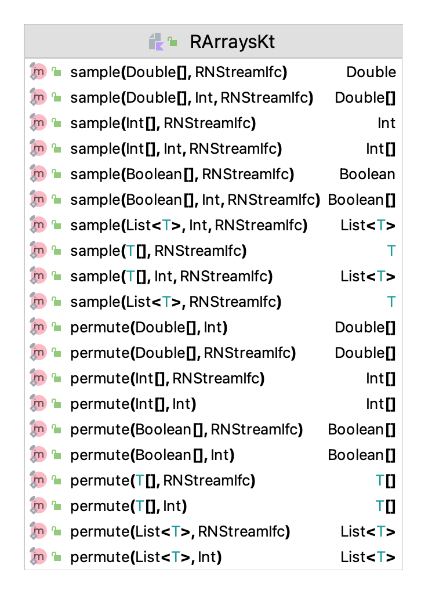
Much of the functionality described here can (and has been) used to implement more complex operations used within the KSL. There are other libraries that are under active develop for working with arrays with design goals that focus on efficiency and memory. The interested reader might look at kmath and the multi-dimensional arrays library, multik.
E.8 KSL Plotting Utilities
This file demonstrates how to create many of the plots that are available within the ksl.utilities.io.plotting package. The KSL uses the lets-plot library as its underlying plotting platform.
The KSL wraps the lets-plot functionality into a set of classes to create commonly used plots within simulation. The KSL has classes that facilitate the construction of the following plots.
ACFPlot- The autocorrelation function (ACF) for an array of data plots the correlation between \(X_i\) and \(X_{i+k}\) for different values of \(k\).BoxPlot- The box plot summary for an array of data plots the summary statistics representing the first quartile, median, and third quartile of the data along with outliers.MultiBoxPlotA multi-box plot presents multiple box plots on the same plotting frame.CDFDiffPlot- CDF difference plot, as defined in Chapter 6 of (Law 2007), plots the difference between the theoretical distribution \(F(x)\) and the empirical distribution \(F_n(x)\) over the range of the data.ConfidenceIntervalsPlot- A confidence intervals plot presents a set of confidence interval on one plotting frame.DensityPlot- A density plot presents the density of the data relative to a possible probability distribution.DiscreteCDFPlot- A discrete CDF plot presents the cumulative distribution function for a discrete empirical random variable with a step-function representation.DotPlot- A dot plot present the distribution of the data as a sequence of dots.ECDFPlot- An empirical CDF plot presents the distribution of the data as a cumulative estimate of the CDF.FitDistPlot- A fit distribution plot presents four plots (ECDFPlot, PPPlot, QQPlot, HistogramPlot) of data for distribution fitting diagnostics.FunctionPlot- A function plot facilitates the plotting of a univariate function.HistogramPlot- A histogram plot summarizes the distribution of the data over well-defined bins.HistogramDensityPlot- A histogram plot summarizes the distribution of the data over well-defined bins and super imposes a density representation over the histogram.IntegerFrequencyPlot- An integer frequency plot presents a bar graph representation of integer frequency tabulated data.StateFrequencyPlot- A state frequency plot presents a bar graph representation of integer frequency data tabulated across state observations.ObservationsPlot- An observations plot presents a time-ordered plot of the data.PMFComparisonsPlot- A PMF comparison plot presents plots the theoretical PMF versus an empirical PMF.PMFPlot- A PMF plot presents a dot bar graph representation of a probability mass function.PPPlot- A P-P plot presents the model probability \(\hat{F}(x_{(i)})\) versus the empirical probability \(\tilde{F}_n (x_{(i)})\) based on the sample for i= 1, 2,\(\ldots\) nQQPlotA Q-Q plot presents the order statistics versus the theoretical order statistics, \(x_{q_i}\) versus \(x_{(i)}\) for i = 1, 2, \(\ldots\) n.ScatterPlot- A scatter plot is a simple x-y plot of two data arrays.StateVariablePlot- A state variable plot presents a step-function representation for time-persistent variables as per Figure 4.4.WelchPlot- A Welch plot presents the cumulative sum plot of Welch data as illustrate in Figure 5.15.PartialSumsPlot- A partial sums plot presents the partial sums process for diagnosing whether initialization bias is present.
In what follows, we present some example code for creating a few of these plots. The full code can be found in the files associated with this appendix.
In the following code, a bivariate normal random variable is created and a sample array is made containing the \(X\) and \(Y\) data. Then a scatter plot is made from the data.
val bvn = BivariateNormalRV(0.0, 1.0, 0.0, 1.0, 0.8)
val data = bvn.sampleByColumn(1000)
val plot = ScatterPlot(data[0], data[1])
plot.showInBrowser(plotTitle = "Scatter Plot of Bivariate Normal RV")
plot.saveToFile("ScatterPlotDemo", plotTitle = "Scatter Plot of Bivariate Normal RV")Figure E.15 presents the plot as generated by the saveToFile() function.
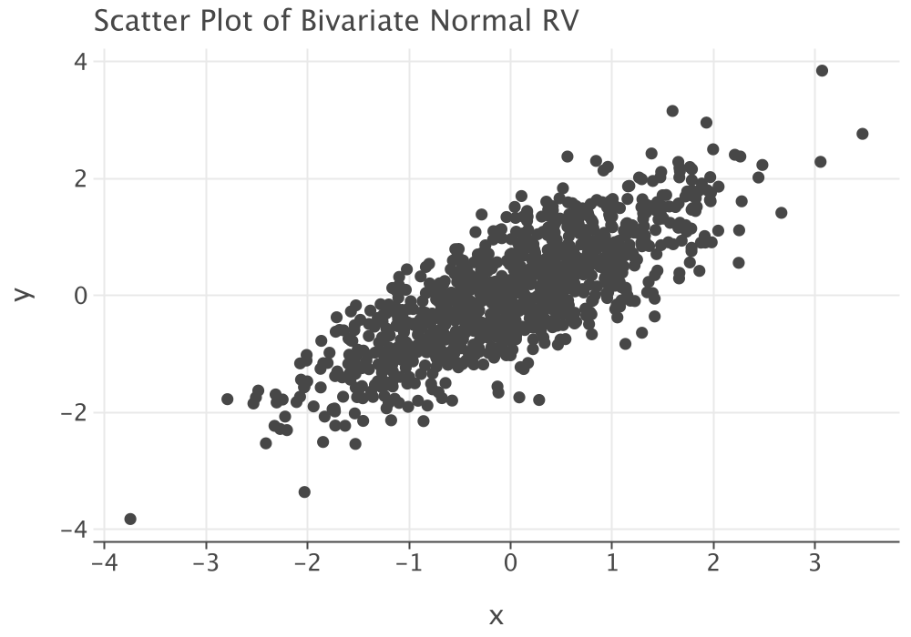
The returned plot variable implements the PlotIfc interface. The PlotIfc interface is shown in Figure E.16. The function buildPlot() returns an instance of the Plot class from the lets-plot library. This instance can be further customized using the concepts of that library. The toHTML() function generates an HTML file that can be opened by a browser. This is what the showInBrowser() function does.
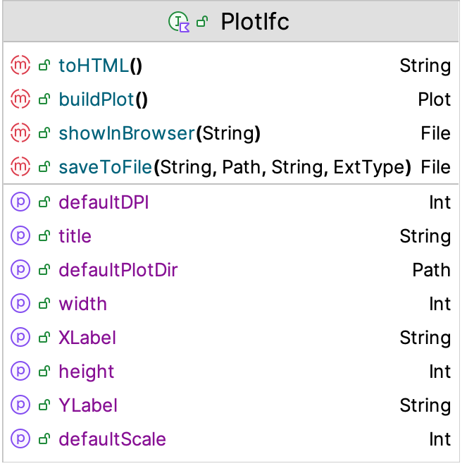
The following code illustrates how to display multiple box plots.
val n = NormalRV()
val m = mutableMapOf<String, BoxPlotSummary>()
for (i in 1..5) {
val bps = BoxPlotSummary(n.sample(200), "BPS$i")
m[bps.name] = bps
}
val plot = MultiBoxPlot(m)
plot.showInBrowser(plotTitle = "Box Plots")
plot.saveToFile("BoxPlotDemo", plotTitle = "Box Plots")The code makes a map of BoxPlot instances indexed by their names and then displays them together on a single plot axis.
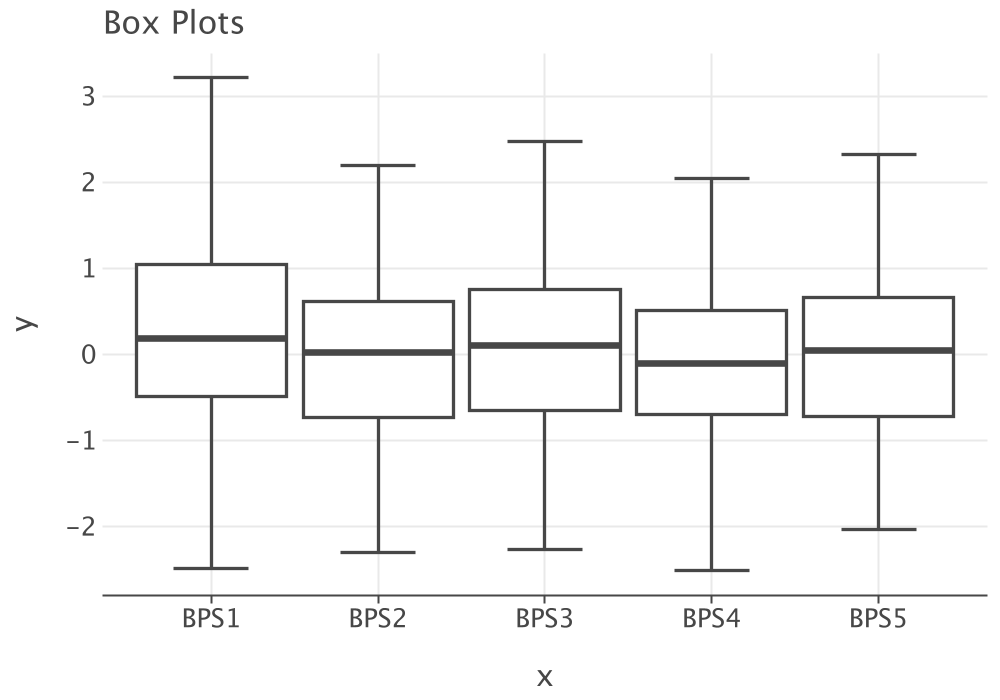
The following code illustrates how to display multiple confidence intervals on the same plot.
val n = NormalRV()
val m = mutableMapOf<String, Interval>()
for (i in 1..5) {
val s = Statistic(n.sample(200))
m[s.name] = s.confidenceInterval
}
val plot = ConfidenceIntervalsPlot(m, referencePoint = 0.0)
plot.showInBrowser(plotTitle = "Confidence Intervals")
plot.saveToFile("ConfidenceIntervalsPlot", plotTitle = "Confidence Intervals")The code makes a map of Interval instances indexed by the names of their associated statistics and then displays them together on a single plot axis.
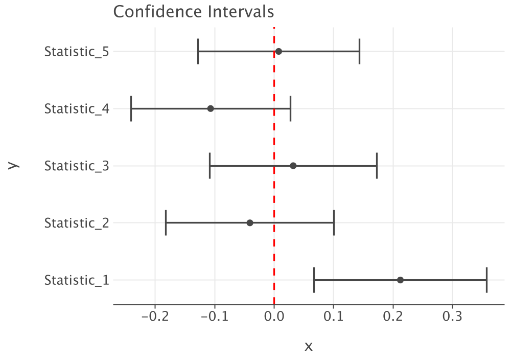
Finally, the following code illustrates how to create a state variable plot. In this case, two arrays are required. The first arrays hold the times at which the state variable changes. The second array holds the value of the state variable for the associated times.
val t = doubleArrayOf(0.0, 2.0, 5.0, 11.0, 14.0, 17.0, 22.0, 26.0, 28.0, 31.0, 35.0, 36.0)
val n = doubleArrayOf(0.0, 1.0, 0.0, 1.0, 2.0, 3.0, 4.0, 3.0, 2.0, 1.0, 0.0, 0.0)
val plot = StateVariablePlot(n, t, "Response")
plot.showInBrowser()
plot.saveToFile("StateVariableDemo", plotTitle = "State Variable Plot")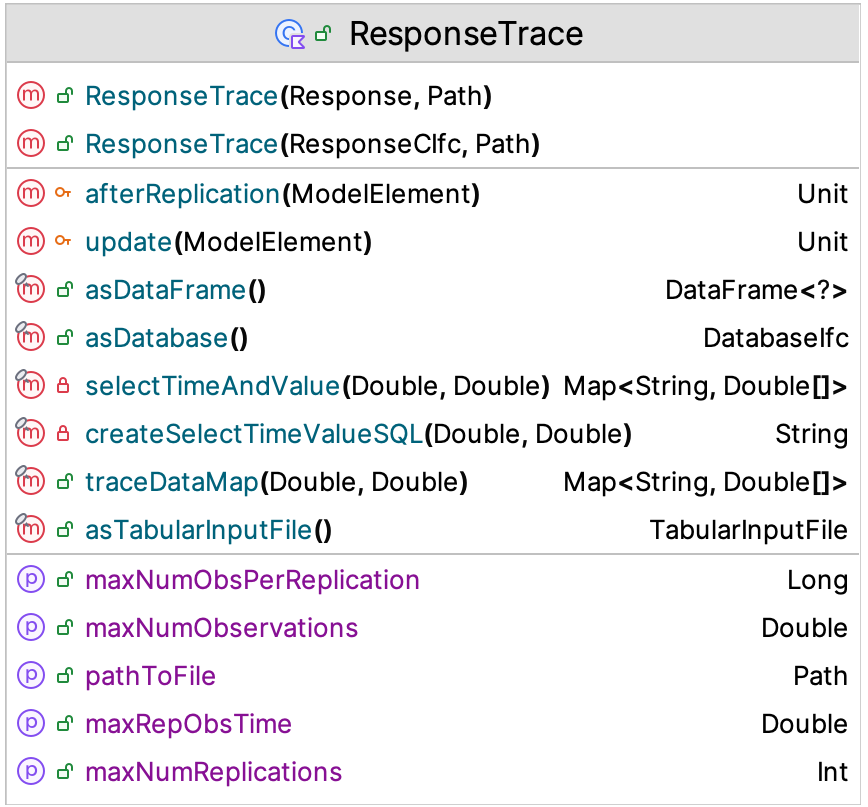
Section 5.4.1 of Chapter 5 presented how to make a ResponseTrace of a variable from a simulation model. In reviewing, Figure E.19, we see that the traceDataMap() function will allow you to grab the data for a state variable plot. The function returns a map that has the time and values for the variable for a particular replication less than or equal to the provided time value.
fun traceDataMap(repNum: Double, time: Double = Double.MAX_VALUE) : Map<String, DoubleArray>{Thus, you can easily create a state variable plot for a response trace when needed.
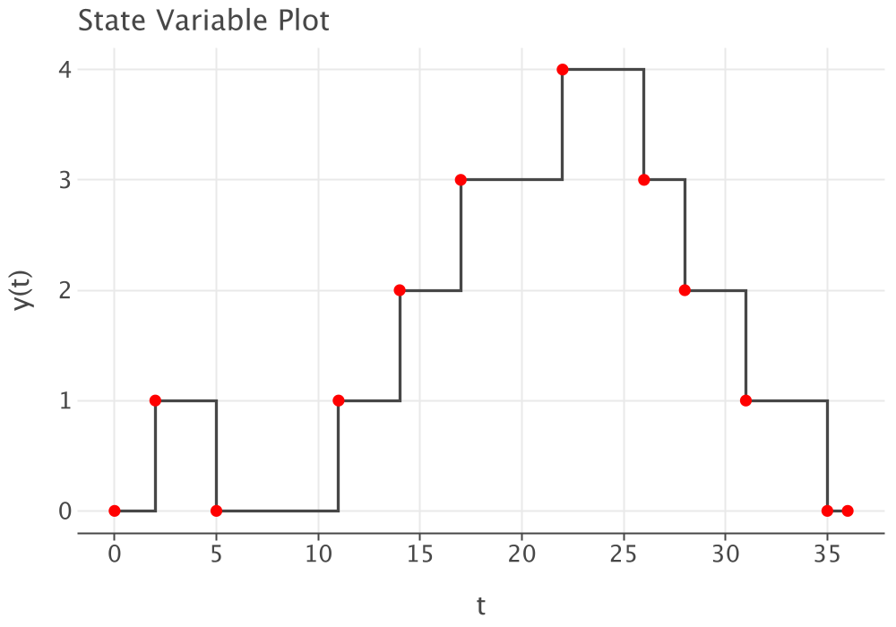
E.9 Miscellaneous Utilities
The KSL also provides a number of other useful class within the utilities package. The KSLMath class provides for working with finer levels of numerical precision and has some useful functions for computing factorials and binomial coefficients. In addition, there are functions for converting doubles to other numeric values.
double getDefaultNumericalPrecision()- returns the default numerical precision that can be expected on the machineboolean equal(double a, double b)- returns true if the two doubles are equal with respect to the default numerical precisionboolean equal(double a, double b, double precision)- returns true if the two doubles are equal with respect to the specified precisionboolean within(double a, double b, double precision)- returns true if the absolute difference between the double is within the specified precisiondouble factorial(int n)- returns a numerically stable computed value of the factorialdouble binomialCoefficient(int n, int k)- returns a numerically stable computed value of the binomial coefficientdouble logFactorial(int n)- returns the natural logarithm of the factorial
The following list may be of interest and lead the reader to further exploration of the details.
GetValueIfcdefines a general function and property to return a valueIdentityIfca general interface to ensure that an implementer have an identity and a name.Intervalis useful to representing an inclusive real-valued interval such as a confidence interval.PreviousValueIfcallows an implementer to remember and return the previous value.KSLMapshold utility functions for making maps from arrays, flattening maps of maps, unflattening maps, and converting maps to JSON.utilities.rootfindingThis package has an implementation for finding the root of a function via binary searchutilities.observershas base classes for implementing and using components that implement the observer pattern.